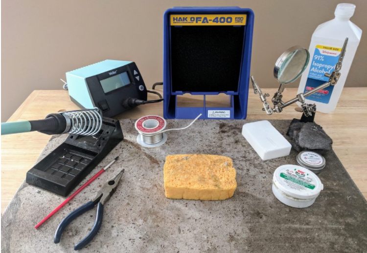
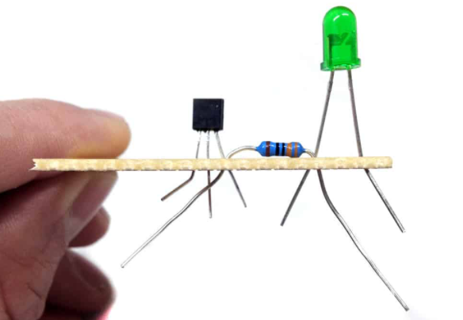
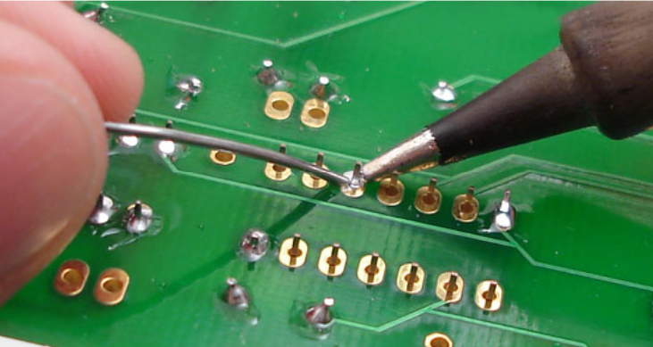
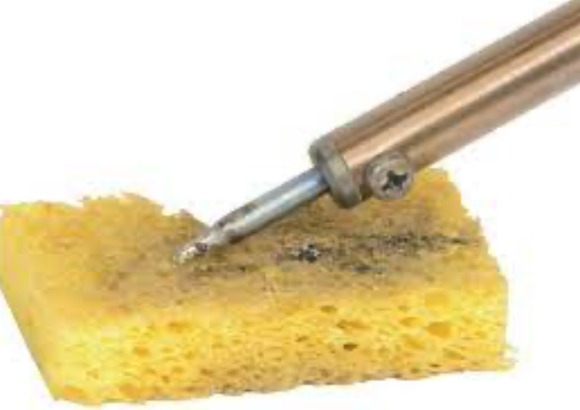

Link to Tutorial: Soldering Training Video with Anthony
Setting Up:
1. Collect the items you intend to solder (ex. Circuit board w/ electrical components) along with the soldering iron, solder and wire cutters/wire strippers.
2. Find a well-lit workbench with an available outlet. If it is dirty, clean it so that you have plenty of space to put down your supplies.
3. Plug in the soldering iron and turn it on. Allow it to warm up to your desired temperature before using it.
4. If you have a sponge, wet and squeeze it to prevent water from dripping on the table, and allow it to rest on the holder. If you have a brass wire sponge, place it to the side.
Soldering:
1. Take the electrical component you wish to solder and place in the appropriate location on the circuit board, having it almost flush to the board. Double check that it is in the correct orientation and position before beginning to solder it to the board.
a. If it is a wire that is being soldered, strip the end of the wire about one inch with the wire strippers. Twist the metal of the wire. Using the soldering iron, add a small amount of solder to hold together the twisted wire so that it holds together.
2. Take a clamp and place the circuit and/or the piece to be soldered on in clamps so that they are held in place. This will ensure that the pieces do not move around during the soldering process.
3. Unroll a length of solder that you expect to use and cut it off. This will make it easier to move around and handle.
4. Touch one end of the solder to the point where the component and circuit touch. Hold this steady.
5. Pick up the soldering iron by the handle, and slowly apply the tip of it to where the solder touches the component. Melt the solder until a small bubble of solder covers the spot, and immediately remove the iron to avoid burning the components.
6. Allow the melted solder to cool on the circuit before touching it. If more needs to be added, carefully apply more solder with the tip. If there is too much and the solder is overflowing, desolder the excess.
7. Gently swab the tip of the iron on the wet sponge or the brass wire sponge to get rid of any excess solder.
8. To remove any excess wire from a component, use wire cutters to trim the jutting wire at the top of the solder bubble. Be sure not to remove the cooled solder.
9. Repeat steps 1-8 for any additional components that need to be soldered.
Cleaning Up:
1. Unplug the soldering iron, and allow it to cool before storing. Make sure the iron is securely resting in its folder.
2. If there is any excess solder, store in a cool, dry place with your other solder. Unless the piece is too short to safely hold without burning oneself, this can be reused for any future soldering projects.
3. Store your circuit in a safe location.
Desoldering